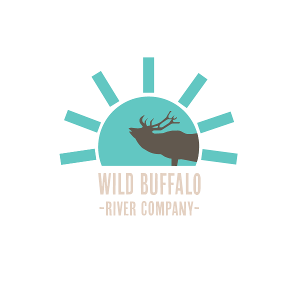

Experience the Untamed Beauty of the Buffalo National River
Your Gateway to Adventure in Ponca, Arkansas—From Locally Crafted Canoes to Rustic Ridge Retreats.
Our Services
- Float the River: Premium canoe rentals and expert shuttle services.
- Stay at Bear Ridge: Cabin rentals designed for ultimate relaxation.
- Plan with Confidence: Live river level updates and local activity guides.
Why Wild Buffalo River Company?
We offer a seamless digital booking experience paired with deep local expertise. Whether you are here for the world-class elk watching in Boxley Valley or a peaceful float through the Ozarks, we provide the tools and the gear to make your trip unforgettable.